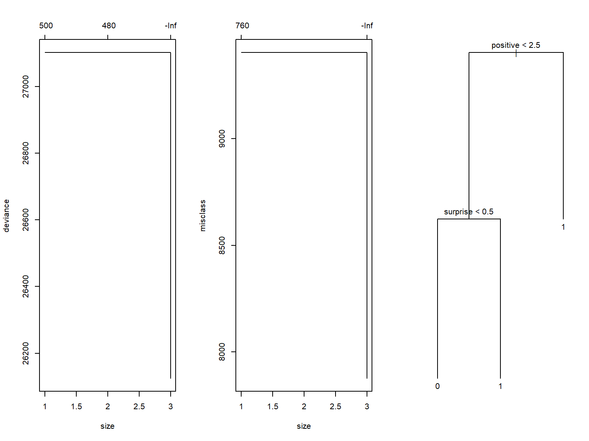

Aliya Alimujiang and Minh Nguyen
What are tweets telling us about the #2020Elections?
\(H_0: All \ \beta's = 0\) \(H_1: At \ least \ one \ \beta's \ne 0\)
If \(H_1:\) is True then we should be able to predict
| 0 | 1 | |
|---|---|---|
| 0 | 2410 | 1610 |
| 1 | 1769 | 2599 |
| Accuracy Rate | Error Rate | Sensitivity | Specificity | False Positives |
|---|---|---|---|---|
| 0.5971626 | 0.4028374 | 0.6174863 | 0.5766930 | 0.4233070 |
##
## Call:
## glm(formula = candidate ~ . - name - favorites - retweets, family = binomial,
## data = sent.training[Z, ])
##
## Deviance Residuals:
## Min 1Q Median 3Q Max
## -2.2884 -1.1210 0.6955 1.1169 1.9027
##
## Coefficients:
## Estimate Std. Error z value Pr(>|z|)
## (Intercept) -0.340287 0.026563 -12.811 < 2e-16 ***
## anticipation 0.265392 0.027611 9.612 < 2e-16 ***
## sadness 0.449556 0.034867 12.893 < 2e-16 ***
## fear -0.170233 0.030261 -5.626 1.85e-08 ***
## joy -0.550837 0.034735 -15.858 < 2e-16 ***
## positive 0.533631 0.021893 24.375 < 2e-16 ***
## surprise 0.206145 0.026058 7.911 2.55e-15 ***
## trust -0.211719 0.027501 -7.699 1.37e-14 ***
## anger 0.266274 0.036494 7.296 2.96e-13 ***
## disgust 0.006107 0.043007 0.142 0.887
## negative -0.237686 0.026870 -8.846 < 2e-16 ***
## ---
## Signif. codes: 0 '***' 0.001 '**' 0.01 '*' 0.05 '.' 0.1 ' ' 1
##
## (Dispersion parameter for binomial family taken to be 1)
##
## Null deviance: 27100 on 19569 degrees of freedom
## Residual deviance: 25706 on 19559 degrees of freedom
## AIC: 25728
##
## Number of Fisher Scoring iterations: 4| Accuracy Rate | Error Rate | Sensitivity | Specificity | False Positives |
|---|---|---|---|---|
| 0.5983548 | 0.4016452 | 0.5675366 | 0.6318408 | 0.3681592 |

| Accuracy Rate | Error Rate | Sensitivity | Specificity | False Positives |
|---|---|---|---|---|
| 0.7182880 | 0.2817120 | 0.7591575 | 0.6738806 | 0.3261194 |
## 0 1 MeanDecreaseAccuracy MeanDecreaseGini
## anticipation 72.31672 69.36139 164.8482 553.0815
## sadness 80.26351 118.89472 186.5874 313.0333
## fear 102.38393 55.79586 151.6950 426.8393
## joy 124.22504 65.70928 169.5625 386.2367
## positive 100.99737 90.60066 237.4569 686.9071
## surprise 90.45728 73.74885 281.3582 446.0626
## trust 112.43608 78.41566 257.8224 595.6363
## anger 34.35517 56.45817 103.9335 330.8331
## disgust 74.15067 53.85452 111.6349 263.1480
## negative 142.28813 72.39467 251.5212 607.5777| Biden | Biden % | Trump | Trump % |
|---|---|---|---|
| 12497 | 0.6232296 | 7555 | 0.3767704 |